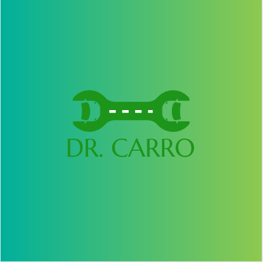

|  |
estampados lleves en tus playeras y camisas mejor.
Se busca que la parte mas llamativa o colorida de un outfit son los
tennis ya que estos agregan cierta cache a la persona que los esta
portando.

Oscar Emilio Gonzalez Herrera "estampados lleves en tus playeras y camisas mejor. Se busca que la parte mas llamativa o colorida de un outfit son los tennis ya que estos agregan cierta cache a la persona que los esta portando." |
Eduardo Alejandro García Sandoval "Agradecido con el arriba con mi mamá porque siempre me apoyo, a mi tia por siempre estar para mi, a mi maestro rodolfo por aguantarnos y ser el mejor maestro que conozco y al ceti en general por enseñarme todo lo que se." |